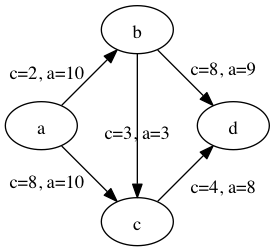

Python + Gurobi による科学技術計算環境の構築
目次
1 XQuartz のインストール
XQuartz は OS X 上で動作する Xウィンドウシステム．
- http://xquartz.macosforge.org/landing/ から最新版の dmg ファイルをダウンロード
2 Python の環境構築
2.1 Python のバージョン確認
- Gurobi は Mac OS X デフォルトの Python しかサポートしない(参考)．まずは Python
のバージョンを確認：
$ which python # Python へのパスが /usr/bin/python # /usr/bin/python となっていることを確認 $ python --version # Python のバージョンが Python 2.7.5 # 2.7.5 になっていることを確認
- もし homebrew などで別のバージョンの python を入れてしまっている場合は Gurobi
が正常に機能しないので unlink (一時停止) か uninstall (消去)しておく．
- unlink (一時停止)する場合:
$ brew unlink python # /usr/loca/bin/python を一時的に使わなくする
- unlinstall (消去)する場合
$ brew uninstall python # /usr/loca/bin/python を完全に消去する
- unlink (一時停止)する場合:
2.2 pip と homebrew を使って Python のパッケージを充実させる
http://joernhees.de/blog/2013/06/08/mac-os-x-10-8-scientific-python-with-homebrew/ に紹介されているパッケージを入れる．ただし，このサイトでは python の最新版を homebrew でインストールすることを前提としてるが，それだと Gurobi が動かない．
OS X Mavericks にはデフォルトで Python 2.7.5 と以下のモジュールが入っている：
- numpy 1.6.2
- scipy 0.11.0
- matplotlib 1.1.1
そこで，ここでは，Mac OS X デフォルトの Python 用の pip をインストールし，
それを使ってパッケージを追加する方法を述べる．
また，pip でインストールできる(i.e. Python関係)パッケージは極力 pip を用いる
こととした．
- pip のインストール
pip は Python 用のパッケージインストーラである．homebrew 版 python には pip
も含まれるが，Mac OS X デフォルト版にはそれが無いのでインストールする．
sudo easy_install pip
- homebrew のリポジトリに
homebrew/scienceとhomebrew/homebrew-pythonを追加する：brew tap homebrew/science # a lot of cool formulae for scientific tools brew tap homebrew/homebrew-python # python libraries brew update && brew upgrade
- 順番に色々入れていく：
# 仮想環境構築 sudo pip install virtualenv nose # virtualenv は Python の仮想環境を構築するもの．nose は Python の単体テストを簡単にできるように拡張したもの # 科学技術計算用(Numpy, Scipy) # pip install scipy が通らなくなったので，homebrew からインストールするようにした brew install numpy # NumPy は Python で科学計算を行うための基本パッケージ brew install scipy --with-openblas # SciPy は科学・工学用モジュール群 # ネットワーク分析 sudo pip install networkx # NetworkX はネットワーク分析用パッケージ sudo pip install graphillion # Graphillion は「数え上げお姉さん」を救うパッケージ # 画像処理 sudo pip install pillow # Pillow は Python の画像処理ライブラリ brew install imagemagick graphviz # imagemagick は画像の操作・表示のためのソフトウェア．graphviz はグラフ描画ソフトウェア． brew install cairo --without-x # cairo はベクトルベースのフリーの2Dグラフィックスライブラリ brew install py2cairo # cairo 用の python 2.x バインディング # 数式処理，グラフのプロット sudo pip install sympy # SymPy はシンボリックな数式処理のためのライブラリ sudo pip install pyparse # matplotlib のインストールに必要 brew install matplotlib --with-tex # matplotlib は Python で2Dグラフをプロットするためのライブラリ # デバッグ出力 sudo pip install q # q はお手軽なデバッグ出力用のパッケージ # インタラクティブ・モードの強化 brew install qt pyqt # Qt は GUIツールキット．pyqt はその Python バインディング brew install zmq # ZeroMQ は軽さがウリのMQ(message queuing, アプリケーション間データ交換方式の1つ) sudo pip install ipython[zmq,qtconsole,notebook,test] # iPython は Python のインタラクティブ・モードを進化させたもの # データ解析，自然言語処理 sudo pip install pandas nltk # pandas はデータ解析ライブラリ，nltk は自然言語処理ツールキット，
- Homebrew でインストールした Python モジュールへのパスを通す
組み込み Python 下の pip でインストールしたライブラリと homebrew からインストー
ルした Python ライブラリを混在させる場合には，環境変数
PYTHONPATHに homebrew 下のsite-packagesへのパスを追記する必要がある．~/.bash_profileに 以下を追加する：export PYTHONPATH="/usr/local/lib/python2.7/site-packages:$PYTHONPATH"- ターミナルで以下を実行する
$ source ~/.bash_profile
3 Gurobi / Python の環境構築
3.1 Gurobi アカウントの作成とアカデミック・ライセンスの取得
3.1.1 Gurobi のアカウント・ライセンスについて
Gurobi のアカデミック・ライセンスは以下の制約の下で利用可能である：
- 学位授与機構を備えた学術機関の教員・学生もしくはスタッフのみが利用できる
- 研究もしくは教育目的にのみ利用できる
- 公認の学術機関ドメインから validate される必要がある．アカデミック・ライセンス の有効期限は12ヶ月だが，適切な教員・学生もしくはスタッフは，この手続きを繰り返 すことでライセンスを更新できる．
3.1.2 アカウント作成，ライセンスの取得および認証の方法
- http://www.gurobi.com にアクセスし，Register for Free をクリック

- Account Type は「Academic」とし，Email は
tohoku.ac.jpで終わるアドレスを利 用．Company/University には「Tohoku University」とする - http://www.gurobi.com のメニューバーから Download > Licenses に移動し，FREE
ACADEMIC のページに移動．2箇所をチェックして Request License する

- ライセンスが発行される．Gurobi をインストールした後，ここで表示される
grbgetkey以下のコマンドをターミナルで入力するとライセンスファイルが生成さ れる．
3.1.3 Gurobi のダウンロードとインストール
- http://www.gurobi.com のメニューバーから Download > Gurobi Optimizer のページ
に移動し，Current version: 5.6.0 の Mac OS 版と READ ME を選択してDownload する．

- README.txt に従ってインストールする(ダウンロードした pkg ファイルをダブルクリッ
クすればインストールできる)．実行ファイルなどは
/Library/gurobi560/mac64
以下にインストールされる．
- ターミナルを立ち上げ，上記のライセンス取得コマンドを実行する：
grbgetkey ae36ac20-16e6-acd2-f242-4da6e765fa0a # このキーは実際には使用できない
Gurobi のサーバーに接続して認証が完了すると，ライセンスファイルの生成場所を尋 ねてくる：
Gurobi license key client (version 5.6.0) Copyright (c) 2012, Gurobi Optimization, Inc. ------------------------------- Contacting Gurobi key server... ------------------------------- Key for license ID 45789 was successfully retrieved. License expires at the end of the day on 2014-08-26. --------------------- Saving license key... --------------------- In which directory would you like to store the Gurobi license key file? [hit Enter to store it in /Users/[username]]]:
デフォルトではホームフォルダにライセンスファイルが生成される．
- ターミナルで
gurobi.shを実行してエラーが出なければOK:$ gurobi.sh # gurobi.sh を実行 Python 2.7.2 (default, Oct 11 2012, 20:14:37) [GCC 4.2.1 Compatible Apple Clang 4.0 (tags/Apple/clang-418.0.60)] on darwin Type "help", "copyright", "credits" or "license" for more information. Gurobi Interactive Shell (mac64), Version 5.6.0 Copyright (c) 2013, Gurobi Optimization, Inc. Type "help()" for help
ここでは Ctrl-D を押して終了させよう．
ライセンスファイルが無効な場合，以下のようなメッセージが表示される：
Python 2.7.2 (default, Oct 11 2012, 20:14:37) [GCC 4.2.1 Compatible Apple Clang 4.0 (tags/Apple/clang-418.0.60)] on darwin Type "help", "copyright", "credits" or "license" for more information. Traceback (most recent call last): File "/usr/local/lib/gurobi.py", line 5, in <module> from gurobipy import * File "/usr/local/lib/python2.7/site-packages/gurobipy/__init__.py", line 1, in <module> from gurobipy import * File "gurobi.pxi", line 11, in init gurobipy (../../src/python/gurobipy.c:72659) File "env.pxi", line 27, in gurobipy.Env.__init__ (../../src/python/gurobipy.c:3099) gurobipy.GurobiError: No Gurobi license found (user nagae, host iMac-Late2012.local, hostid b1b0acc5)
この場合も終了させるには Ctrl-D．
3.2 Gurobi をアップグレードする場合
新しいパッケージをダウンロード→インストールする．ライセンスの更新は不要．
4 Gurobi を使ってみる
4.1 Python を起動
ターミナルから以下を入力：
python
Python が起動し，プロンプトが >>> に変わる．以下，順に入力していく：
>>> import gurobipy as grb # Gurobi 用パッケージを grb という名前でimport >>> m = grb.read('/Library/gurobi560/mac64/examples/data/coins.lp') # デフォルトのインタラクティブ・モデルではファイル名のTAB補完は効かない Read LP format model from file /Library/gurobi560/mac64/examples/data/coins.lp # 読み込みファイル名， Reading time = 0.00 seconds # 読み込みにかかった時間などが表示される (null): 4 rows, 9 columns, 16 nonzeros >>> m.optimize() # 最適化メソッドを呼び出す Optimize a model with 4 rows, 9 columns and 16 nonzeros # 最適化された結果が表示される Found heuristic solution: objective -0 Presolve removed 1 rows and 5 columns Presolve time: 0.00s Presolved: 3 rows, 4 columns, 9 nonzeros Variable types: 0 continuous, 4 integer (0 binary) Root relaxation: objective 1.134615e+02, 4 iterations, 0.00 seconds Nodes | Current Node | Objective Bounds | Work Expl Unexpl | Obj Depth IntInf | Incumbent BestBd Gap | It/Node Time 0 0 113.46154 0 1 -0.00000 113.46154 - - 0s H 0 0 113.4500000 113.46154 0.01% - 0s Explored 0 nodes (4 simplex iterations) in 0.00 seconds Thread count was 8 (of 8 available processors) Optimal solution found (tolerance 1.00e-04) Best objective 1.134500000000e+02, best bound 1.134500000000e+02, gap 0.0% >>> for v in m.getVars(): # 「:」を入力した後改行すると，次のプロンプトが ... になる ...: print v.varName, v.X # print の前には TAB を押してインデントが必要 ...: # 何も入力しないで改行すると for ブロックを抜られる
すると以下が表示されるはず:
Pennies 0.0 Nickels -0.0 Dimes 2.0 Quarters 53.0 Dollars 100.0 Cu 999.8 Ni 46.9 Zi 50.0 Mn 30.0
Python のインタラクティブ・モードを終了するにはCtrl-D を入力．
>>> # ここで Ctrl-D とすると $ # Python モードが終了し，もとのターミナルのプロンプトに戻る
4.2 最小費用流問題を解いてみる
次のようなネットワークを対象として起点(a)から終点(d)まで  単位の製品を輸送
する最小費用流を求める問題を考える(ただし，各リンクの
単位の製品を輸送
する最小費用流を求める問題を考える(ただし，各リンクの  は輸送費用，
は輸送費用， は容量を表す)．
は容量を表す)．

4.2.1 モデルの定式化
ノード集合  とリンク集合
とリンク集合  を以下のように定義する：
を以下のように定義する：
![\[
\ClN = \{a, b, c, d\}, \ClA = \{(a, b), (a, c), (b, c), (b, d), (c, d)\}
\]](ltxpng/python_5c28ecaafb5988129ff8e3eb5d48d3edcec7413b.png)
このとき，最小費用流問題は，以下の3つの要素で構成される：
- 最小化すべき目的関数(総輸送費用)：
![\[
\min_{\Vtx} \sum_{(i, j) \in \ClA} c_{i, j} x_{i, j}
\]](ltxpng/python_fe46f7b2e9080fae5768401b406a2cec245f7adf.png)
- 制約条件その1(各ノードでのフロー保存則)：
![\[
\Subto{} \sum_{(i, n) \in \ClA} x_{i, n} - \sum_{(n, j) \in \ClA}
= b_{n}, \quad \forall n \in \ClN
\]](ltxpng/python_b2e1f635707be462ced374b42bed1309085b9040.png)
ただし，
 は，
は， が起点(a)なら
が起点(a)なら  , が終点なら
, が終点なら , それ以外なら0
となる定数．
, それ以外なら0
となる定数．
- 制約条件その2(非負制約)：
![\[
x_{i, j} \geq 0, \quad \forall (i, j) \in \ClA
\]](ltxpng/python_5b69ed7c80b08e567c91609258aa8632f0612fc7.png)
4.2.2 Gurobi で表現してみる
- まずは Python モードを起動:
$ python
- リンクとノード集合を定義する：
>>> links = [('a','b'), ('a','c'), ('b', 'c'), ('b','d'),('c','d')] >>> nodes = ['a', 'b', 'c', 'd'] >>> orig = 'a' # 起点 >>> dest = 'd' # 終点
- ノード集合は各リンクの起点もしくは終点の集まりなので，以下のように生成してもよ
い．
>>> nodes = set([i for (i, j) in links] + [j for (i, j) in links])
- 各リンクの費用と容量を設定する
>>> cost = dict(zip(links,[2,8,3,8,4])) >>> capacity = dict(zip(links, [10, 10, 3, 9, 8]))
- 総輸送量を設定する
>>> total_volume = 17
- Python 用 Gurobi パッケージを「grb」という名前で読み込む
>>> import gurobipy as grb
- モデルを格納する grb.Model型変数 m を作成する
>>> m = grb.Model()
- GRB.addVar()という関数を用いてリンクごとの未知変数を定義する．
>>> x = {} >>> for (i,j) in links: ... x[i, j] = m.addVar(vtype=grb.GRB.CONTINUOUS, name="x_{%s,%s}" % (i, j)) # x[i, j]の前にはインデントが必要 ... # 何も入力しないで改行 - 目的関数を定義し，最大化/最小化のいずれを行うかを指定する
>>> m.update() # モデルに変数が追加されたことを反映させる >>> m.setObjective(grb.quicksum(x[i, j]*cost[i, j] for (i, j) in links)) # 目的関数 >>> m.setAttr("ModelSense", grb.GRB.MINIMIZE)
- ノードごとのフロー保存則を追加する
>>> b = {} >>> for n in nodes: ... # フロー保存則の右辺の定数を決定する ... if n == orig: # if の前にはインデントが必要 ... b[n] = - total_volume # b[n] の前には更にインデントが必要 ... elif n == dest: ... b[n] = total_volume ... else: ... b[n] = 0 ... # ノードごとのフロー保存則 ... # 行末に「\」をつけると複数行にまたがって記述できる ... m.addConstr(grb.quicksum(x[i, j] for (i, j) in links if j == n)\ ... - grb.quicksum(x[i, j] for (i, j) in links if i == n) \ ... == b[n], name="flow reservation at %s" % n) ... # 空白行を入力することで for ブロックを抜けられる - 非負制約と容量制約を追加する
>>> for (i, j) in links: ... x[i, j].lb = 0.0 ... x[i, j].ub = capacity[i, j] ... # 空白行を入力することで for ブロックを抜けられる
- モデルを更新し，mincostflow.lp に線形計画問題の形で出力する
>>> m.update() >>> m.write("mincostflow.lp") - 最適化を行う
>>> m.optimize() Optimize a model with 4 rows, 5 columns and 10 nonzeros Presolve removed 2 rows and 3 columns Presolve time: 0.00s Presolved: 2 rows, 2 columns, 4 nonzeros Iteration Objective Primal Inf. Dual Inf. Time 0 1.8000000e+02 2.000000e+00 0.000000e+00 0s 1 1.8300000e+02 0.000000e+00 0.000000e+00 0s Solved in 1 iterations and 0.00 seconds Optimal objective 1.830000000e+02 - 最適値と最適解(最小費用流)を表示させる
>>> print "optimal value:\t%8.4f" % m.ObjVal optimal value: 183.0000 >>> for (i, j) in links: ... print "%s:\t%8.4f" % (x[i, j].VarName, x[i, j].X) ... x_{a,b}: 10.0000 x_{a,c}: 7.0000 x_{b,c}: 1.0000 x_{b,d}: 9.0000 x_{c,d}: 8.0000
4.3 インタラクティブ・モードに疲れたら
インタラクティブ・モードで逐一コマンドを入力するのは面倒．そういう場合は，以下の ようなスクリプト・ファイルに記述して呼び出せばいい．
#! /usr/bin/python # *-* encoding: utf-8 *-* # リンク集合 links = [('a','b'), ('a','c'), ('b', 'c'), ('b','d'),('c','d')] # ノード集合 nodes = ['a', 'b', 'c', 'd'] orig = 'a' # 起点 dest = 'd' # 終点 # 各リンクの輸送費用 cost = dict(zip(links,[2,8,3,8,4])) # 各リンクの容量 capacity = dict(zip(links, [10, 10, 3, 9, 8])) # 起点から終点までの総輸送量 total_volume = 17 # Gurobi パッケージを grb という名前で import import gurobipy as grb # print "%s:\t%8.4f" % (x[i, j].VarName, x[i, j].X) m = grb.Model() # 未知変数を x という辞書型変数に格納 x = {} # addVar() という関数を用いてモデルに変数を追加する for (i,j) in links: x[i, j] = m.addVar(vtype=grb.GRB.CONTINUOUS, name="x_{%s,%s}" % (i, j)) m.update() # モデルに変数が追加されたことを反映させる # 目的関数を設定し，最小化を行うことを明示する m.setObjective(grb.quicksum(x[i, j]*cost[i, j] for (i, j) in links))# 目的関数 m.setAttr("ModelSense", grb.GRB.MINIMIZE) # 各ノードでのフロー保存則を追加する b = {} # フロー保存則の右辺の定数を設定する for n in nodes: if n == orig: b[n] = - total_volume elif n == dest: b[n] = total_volume else: b[n] = 0 # ノードごとのフロー保存則 # 行馬に「\」をつけると1つの行を複数行にまたがって記述できる m.addConstr(grb.quicksum(x[i, j] for (i, j) in links if j == n)\ - grb.quicksum(x[i, j] for (i, j) in links if i == n) \ == b[n], name="flow reservation at %s" % n) # 各ノードでの非負制約と容量制約を追加する for (i, j) in links: x[i, j].lb = 0.0 x[i, j].ub = capacity[i, j] # モデルに制約条件が追加されたことを反映させる m.update() m.write("mincostflow.lp") # mincostflow.lp というファイルに定式化されたモデルを出力する # 最適化を行い，結果を表示させる m.optimize() print "optimal value:\t%8.4f" % m.ObjVal for (i, j) in links: print "%s:\t%8.4f" % (x[i, j].VarName, x[i, j].X)
Python からファイルを呼び出すには，ターミナルで
$ python sampleMCF.py
とすればよい．